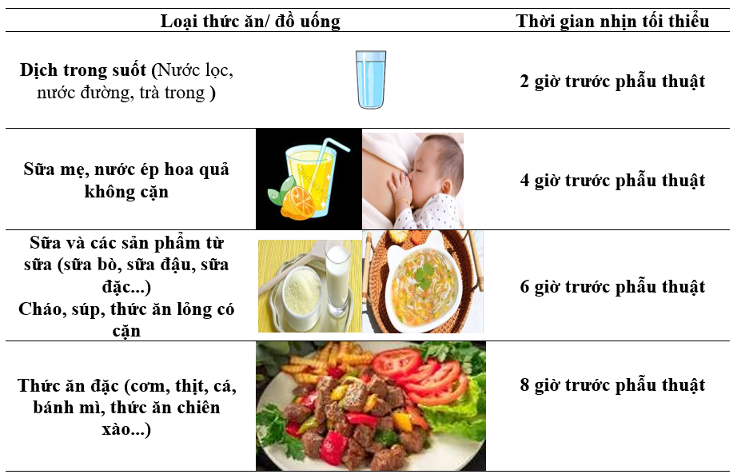

VÌ SAO PHẢI NHỊN ĂN TRƯỚC PHẪU THUẬT?
• Giúp làm rỗng dạ dày
• Giảm nguy cơ trào ngược và hít sặc
• Giảm buồn nôn sau phẫu thuật
• Giảm nguy cơ biến chứng
THỜI GIAN NHỊN ĂN UỐNG

SỬ DỤNG ĐƯỜNG CARBOHYDRATE
Vì sao cần dùng?
• Giảm đói, khát
• Ổn định chuyển hóa
• Giảm stress trước mổ
Cách sử dụng:
• Tối trước mổ: uống 2 khẩu phần
• Ngày mổ: uống 1 khẩu phần
Theo lịch mổ:
👉 Trước 6h: mổ trước 12h
👉 Trước 10h30: mổ sau 12h
👉 Trước 16h: mổ sau 18h
⏰ Kết thúc trước mổ ít nhất 2 giờ
LƯU Ý:
• Có thể thay bằng nước trong suốt nếu không dung nạp
• Trẻ em uống theo nhu cầu
• Người đái tháo đường điều chỉnh liều
• Người béo phì: dùng như bình thường
VÌ SAO PHẢI NHỊN ĂN TRƯỚC PHẪU THUẬT?
• Giúp làm rỗng dạ dày
• Giảm nguy cơ trào ngược và hít sặc
• Giảm buồn nôn sau phẫu thuật
• Giảm nguy cơ biến chứng
THỜI GIAN NHỊN ĂN UỐNG
SỬ DỤNG ĐƯỜNG CARBOHYDRATE
Vì sao cần dùng?
• Giảm đói, khát
• Ổn định chuyển hóa
• Giảm stress trước mổ
Cách sử dụng:
• Tối trước mổ: uống 2 khẩu phần
• Ngày mổ: uống 1 khẩu phần
Theo lịch mổ:
👉 Trước 6h: mổ trước 12h
👉 Trước 10h30: mổ sau 12h
👉 Trước 16h: mổ sau 18h
⏰ Kết thúc trước mổ ít nhất 2 giờ
LƯU Ý:
• Có thể thay bằng nước trong suốt nếu không dung nạp
• Trẻ em uống theo nhu cầu
• Người đái tháo đường điều chỉnh liều
• Người béo phì: dùng như bình thường
VÌ SAO PHẢI NHỊN ĂN TRƯỚC PHẪU THUẬT?
- Giúp làm rỗng ruột
- Giảm nguy cơt rào ngược và hít sặc vào phổi
- Giảm nguy cơ nôn và buông nôn
- Giảm nguy cơ nhiễm trùng và biễn chứng phẫu thuật
THỜI GIAN NHỊN ĂN UỐNG THEO TỪNG LOẠI THỨC ĂN
SỬ DỤNG ĐƯỜNG CARBOHYDRAT 1.Vì sao phải uống đường carbohydrat trước phẫu thuật?- Giảm đói, khát trước phẫu thuật
- Hỗ hợ ổn định chuyển hoá
- Giảm stress trước phẫu thuật
2. Uống đường carbohydrat trước phẫu thuật chương trình: * Tối ngày trước phẫu thuật : Uống dần 2 khẩu phần từ sau ăn tối đến khi đi ngủ * Ngày phẫu thuật:- Không cần truyền dịch bổ sung nước, điện giải, năng lượng khi chờ phẫu thuật
- Uống 1 khẩu phần theo một trong hai cách sau đây:
⏰Theo lịch phẫu thuật:
👉Trước 6 giờ sáng nếu phẫu thuật trước 12 giờ
👉Trước 10 giờ 30 phút nếu phẫu thuật sau 12 giờ
👉Trước 16 giờ nếu phẫu thuật trì hoãn sau 18 giờ
⏰Kết thúc uống tối thiểu 2 giờ trước phẫu thuật
LƯU Ý:
- Người bệnh không dung nạp, từ chối hoặc khi không sẵn có loại dịch giàu carbohydrate: Khuyến khích uống dịch trong suốt khác hợp với sở thích.
- Trẻ em: Uống theo nhu cầu bất cứ loại dịch trong suốt nào hợp với sở thích, ưu tiên lựa chọn loại cung cấp thêm năng lượng và điện giải. Trẻ > 16 tuổi uống dịch trong suốt carbohydrate như đối với người lớn.
- Người đái đường đã kiểm soát: tuýp 1 uống 1/2 lượng carbohydrate (50 g tối hôm trước và 25 g vào ngày phẫu thuật); tuýp 2 uống như người bệnh không đái đường.
- Người bệnh béo phì, sản phụ chưa chuyển dạ uống như với người bệnh khác